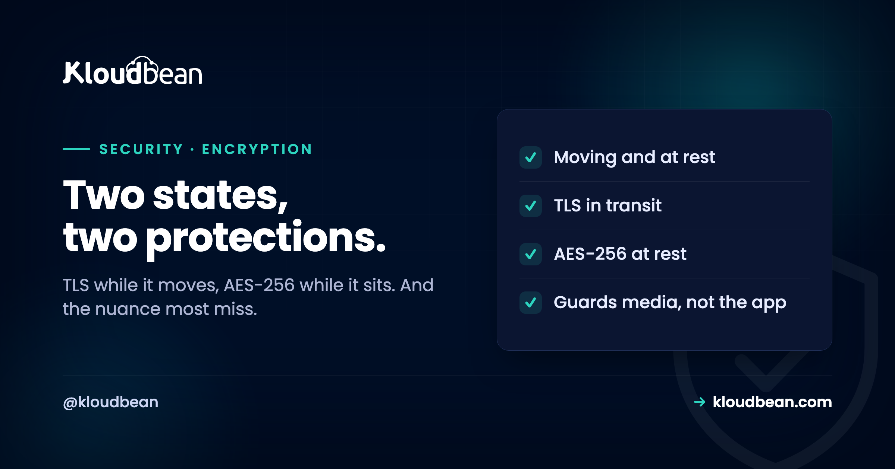

Encryption at Rest and in Transit: The Two States Your Data Lives In

Your data is only ever in one of two states. It is either moving, travelling between a browser and your server or between two services, or it is sitting still, written to a disk, a database, a backup, an object store. Each state faces a different threat, so each needs its own kind of encryption. Almost everyone gets the first one right, because the browser padlock made encryption in transit a habit. Far fewer think seriously about the second, and that is exactly the data a stolen disk or a leaked backup exposes. Worse, there is a widely believed half-truth about what encryption at rest protects, and getting it wrong gives people a false sense of safety. Let us fix both.
Encryption in transit protects data while it moves, using TLS, so anyone intercepting the connection sees scrambled bytes rather than your data; it is what the browser padlock represents. Encryption at rest protects data while it is stored, using strong ciphers like AES-256 on disks, databases, backups, and object storage, so a stolen drive or a leaked backup is unreadable. The nuance most people miss: encryption at rest protects the physical media, not your live application. It is transparent to anyone with legitimate access, so it does nothing against a leaked password, a SQL injection, or a compromised app. On Kloudbean, TLS is enforced with free auto-renewing SSL, and managed engagements provide AES-256 at rest across disks, managed databases, and object storage, with customer-managed keys where required.
In transit: the padlock you already know
This is the state most people already handle, so we will be brief and point you deeper where it helps.
When data moves over a network, anyone positioned along the path, on shared wifi, at an internet provider, on a compromised router, could in principle read it. Encryption in transit closes that off using TLS, the protocol behind HTTPS: the connection is encrypted end to end, so an interceptor sees unreadable ciphertext instead of passwords, personal data, or API payloads. The visible sign is the padlock and the https:// in the address bar. The firm modern rule is that everything should be over HTTPS, all the time, with plain HTTP redirected to HTTPS so there is no unencrypted path at all. How TLS actually works, the handshake, certificates, and versions, is a topic in itself, and we cover it in SSL and TLS explained. For this article, the point is simply that in transit is one of your two states, and TLS is how you cover it.
The reason this state is the one everyone gets right is that platforms stopped making it a task. On Kloudbean, SSL is free and auto-renewing, and HTTP redirects to HTTPS, so the failure mode that used to dominate, a certificate quietly expiring on a Saturday, mostly stopped happening. Keep that in mind when you compare the two states: in transit got solved by defaults, at rest did not.
At rest: the half people forget
Now the state that gets neglected, because it is invisible day to day. Your data spends almost all of its life at rest.
At any moment, the vast majority of your data is not moving, it is written down somewhere: on the server's disk, inside the database files, in nightly backups, in an object-storage bucket full of uploads. Encryption at rest means all of that is stored encrypted with a strong cipher, the industry standard being AES-256, so the raw bytes on the physical media are scrambled. The threat it addresses is physical and possessional: a disk that is decommissioned improperly and resold, a backup file that ends up somewhere it should not, storage media that is stolen or seized. Without encryption at rest, whoever holds that media can read everything on it directly. With it, they hold a box of noise they cannot open. For personal data and anything regulated, encryption at rest is not a nice-to-have, it is table stakes and frequently a compliance requirement.
Be precise about where this gets delivered, because the answer differs by plan shape everywhere, not only here. AES-256 across disks, managed databases, and object storage, with TLS 1.2 as a floor and 1.3 where supported, is what Kloudbean configures on managed enterprise engagements running on a dedicated cloud account. If you're on a self-serve plan and a regulator has asked you for documented at-rest coverage of the whole footprint, that's a conversation to have before you write the answer down.
What encryption at rest does not protect against
This is the nuance that even experienced people get wrong, and it is the most important paragraph here, so read it twice.
Encryption at rest protects the storage media, not your running application. It is transparent to legitimate access: when your app queries the database, the data is decrypted automatically because your app is authorised, and the same is true for anyone or anything with valid access. That means encryption at rest does nothing against the attacks people most often worry about. A leaked database password, a SQL injection flaw, a stolen session, a compromised admin account, application bugs that expose data through the app itself, none of these are stopped by at-rest encryption, because in every case the attacker is coming through the front door with valid access, and the data decrypts for them exactly as it does for you. So "our data is encrypted at rest" is a true and worthwhile statement that answers a narrow question: what happens if someone physically gets the disk or the backup. It is not an answer to "is our application secure," and treating it as one is how organisations end up breached while sincerely believing encryption had them covered. At-rest encryption is one necessary layer, sitting alongside access control, application security, and everything else, never a substitute for them.
Which is why the useful next question isn't about ciphers, it's about who can reach the door. For a managed database on a standard Kloudbean plan, the practical control is IP Access Control: allow-list your application server's address so only that server can connect, and refuse everything else. Strong credentials, rotated, on top. That combination is what actually blunts a leaked password, and it's self-serve rather than something you have to negotiate. On enterprise engagements the database can sit on a private network instead, but note the ordering: allow-listing plus credentials is the control most readers of this article should go and check today.
Who holds the key
Encryption is only as meaningful as the control of its keys, and that raises a question worth asking your provider.
By default, a managed platform encrypts your data at rest with keys it manages for you, which is convenient and covers the physical-media threat well. For organisations with stricter requirements, customer-managed encryption keys (CMEK) through a key management service (KMS) let you control the key that protects your data, so you can govern and revoke access to the ciphertext at the key level. The distinction matters most in regulated settings, where being able to demonstrate and control key custody is part of the compliance story. For many teams, provider-managed keys are entirely appropriate; for some, holding the key themselves is a requirement. Knowing which you need, and asking whether CMEK is available, is the practical takeaway.
Check your own two states, in this order
Take twenty minutes and go looking. The order matters, because the first two are usually already fine and the ones underneath them are where the gaps live.
- Your public site over HTTPS, with HTTP redirecting. Almost always yes. Confirm the redirect, not just the padlock, since a page reachable on plain HTTP is an unencrypted path even when the HTTPS version works.
- Internal hops. App to database, app to cache, service to service, webhook to endpoint. This is the first real gap for most teams, because it's invisible from a browser. Check whether your database connection actually uses TLS or just happens to sit on a trusted network.
- Backups. Where do they live, and are they encrypted there? Backups get copied to more places than production data ever does, which is exactly why they leak more often.
- Object storage and uploads. The bucket full of user files is data at rest too. Check the encryption and check whether public access is prevented, because an unencrypted-but-private bucket and an encrypted-but-public one both end badly.
- Who can reach the database. Allow-listed to your app server, or open with a password in front of it? This is the door, and it's the question at-rest encryption never answers.
- Key custody, if you're regulated. Provider-managed keys are fine for most teams. If your framework asks you to demonstrate custody, you need CMEK through a key management service, which Kloudbean sets up on managed enterprise engagements where a workload requires it.
On items one and two, the platform does most of the work: free auto-renewing SSL, enforced HTTPS redirect, TLS 1.2 as a floor with 1.3 where supported. On three, four, and six, Kloudbean configures AES-256 across disks, managed databases, and object storage on managed enterprise engagements, with bucket-level access controls, public access prevention, and object versioning, and CMEK where required.
Item five is the one worth ending on, because no host closes it for you. Kloudbean can give you the allow-list, and it can't decide which addresses belong on it. Nobody's platform can. Same for the layer above: an SQL injection flaw, a credential committed to a repository, a session token that never expires, an admin account without MFA. Every one of those walks in through legitimate access, and decryption serves it exactly as politely as it serves you. That's not a limitation of a particular provider, it's what encryption is for and what it isn't. Get both states covered, then spend your remaining attention on the door, with the access controls and authentication in the secure and compliant hosting guide.
Related reading
For how the in-transit half actually works, SSL and TLS explained and fixing SSL certificate errors. Encryption at rest matters most alongside good backups (which should themselves be encrypted) and clear data residency. It is one layer among many in secure and compliant hosting, and pairs with strong authentication so the legitimate access it trusts is itself hard to steal.
Encrypt both states, from day one.
Kloudbean enforces TLS in transit with free auto-renewing SSL, and managed engagements add AES-256 at rest across disks, managed databases, and object storage, with customer-managed keys where regulation requires them. Compare the platform in Kloudbean vs Cloudways, or start at kloudbean.com.
TLS enforced · Free auto-renewing SSL · AES-256 at rest (managed) · CMEK where required
FAQ
What is the difference between encryption at rest and in transit?
Encryption in transit protects data while it moves across a network, using TLS, so an interceptor cannot read it; it is what the browser padlock signals. Encryption at rest protects data while it is stored, using a strong cipher like AES-256 on disks, databases, backups, and object storage, so stolen or leaked media is unreadable. They address different threats, the network path versus the physical media, so a complete setup uses both rather than choosing one.
Does encryption at rest protect against hackers?
Only a specific kind of threat: someone physically obtaining the storage media, such as a stolen disk or a leaked backup. It does not protect against attacks that come through legitimate access, like a leaked database password, SQL injection, a stolen session, or a compromised admin account, because the data decrypts automatically for anyone with valid access. So it is essential for the physical-media threat but not a defence against application-level attacks, which need access control and secure code.
What does AES-256 mean?
AES-256 is the Advanced Encryption Standard using a 256-bit key, a widely trusted, industry-standard cipher for encrypting stored data. The 256-bit key length makes brute-forcing the encryption infeasible with current technology. When a provider says data is encrypted at rest with AES-256, it means the stored bytes are scrambled with that strong algorithm, so the physical media is unreadable without the key.
Is TLS the same as encryption in transit?
TLS is the protocol that provides encryption in transit for web and many other connections, so in practice they are used almost interchangeably in a hosting context. TLS encrypts the connection between two endpoints, such as a browser and your server, so data in motion cannot be read by anyone intercepting the path. Encryption in transit is the goal; TLS is the standard way it is achieved.
What are customer-managed encryption keys (CMEK)?
CMEK means you, rather than the provider, control the key that encrypts your data at rest, usually through a key management service. This lets you govern and revoke access to the encrypted data at the key level, which matters in regulated environments where demonstrating key custody is part of compliance. For many teams, provider-managed keys are sufficient; CMEK is for organisations whose requirements specifically call for holding their own keys.
Should my backups be encrypted?
Yes. Backups are one of the most common places sensitive data leaks from, because they are copied, moved, and sometimes stored in less-guarded locations. Encrypting backups at rest means a backup file that ends up somewhere it should not be is unreadable. Since backups are simply data at rest in another location, the same at-rest encryption logic applies, and leaving them unencrypted undermines the protection on your primary storage.
Is encryption enough to be compliant?
No. Encryption at rest and in transit is a common requirement in frameworks like GDPR, PCI DSS, and others, so it is usually necessary, but it is only one control among many. Compliance also requires access control, logging, secure application practices, and organisational processes. Encryption is a foundation that most frameworks expect you to have, not a box that makes you compliant on its own.
How does Kloudbean handle encryption?
In transit, TLS is enforced with free auto-renewing SSL and HTTP is redirected to HTTPS, so the moving state is covered by default. At rest, managed engagements provide AES-256 across disks, managed databases, and object storage, with TLS 1.2 as a floor and 1.3 where supported, and customer-managed keys via a key management service available where a regulated workload requires them. Encryption covers the network and the media; application-level security remains a shared responsibility.